Teleportation Shader
- Setup
- Localized Z-Gradient mask
- A
- B
- Noise Pattern
- Opacity Mask
- Vertex Deformation
- Emissive
- Conclusion
源地址：https://deepspacebanana.github.io/deepspacebanana.github.io/

This small shader effect came out of another shader I was making that was inspired by this Fog of War Effect I came across on twitter. I then modified the Material Function to work as Teleportation Shader Effect
Setup
Like a lot of my other Fx Shaders, this one is also wrapped into a Material Function for easy Re-usability. This one is actually quite similar to the glitch effect and use a lot of the same concepts.The basic idea for this effect is to use a linear gradient along the z-Axis of the object to create an opacity Mask, we combine the mask with some Noise Patterns to make it look more interesting, then we add some Vertex Deformation to add some more interest to the effect.
Note: You can open the images in a new tab to view them at a higher resolution
This is what the initial setup for the material function looks like, we take an entire Base Material as the input and we add shader effects on top of it.
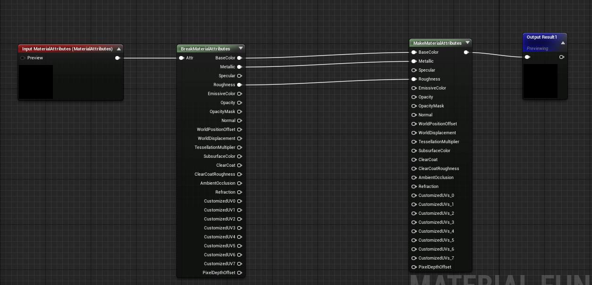
Localized Z-Gradient mask
First we create a localized linear z-gradient based on the object bounds, please note this setup assumes that the object’s pivot is located at it’s base, if not you would need to add the necessary offset value for the offset input.
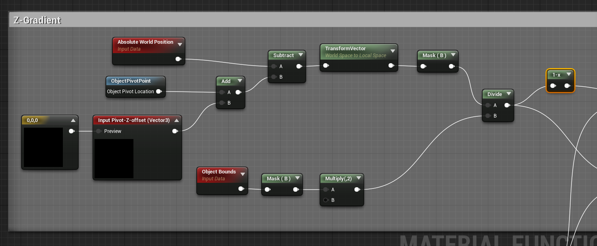
Previewing this result, will result in a linear gradient from top to bottom.
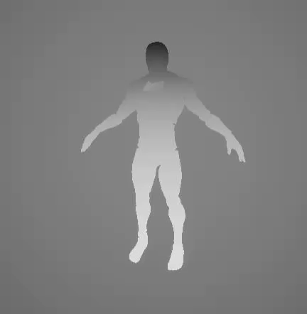
Next we create an inverted version of the gradient which we will use later to drive vertex Deformation, and we also subtract a scalar Parameter that we can use to drive the effect. Note that I am using a Sine wave to preview the result, in the end the effect is controlled with a Scalar Parameter value going from 0-1
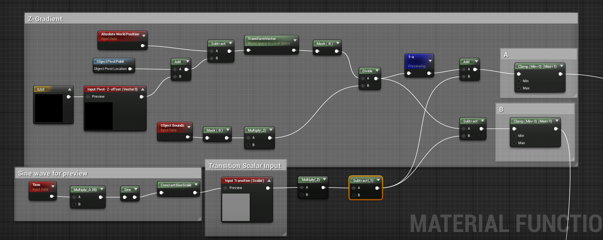
If you preview A and B respectively you will see the following results, as you can see we are using the “Transition” Scalar input(0-1) to drive the gradient, which in turn will drive the Opacity mask and the Vertex Deformation later.
A
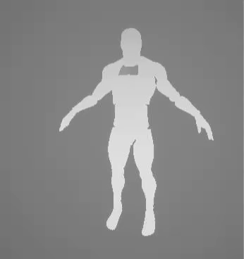
B
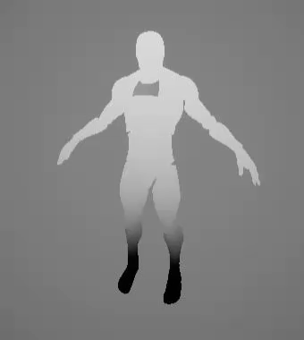
Noise Pattern
Next we setup an animated cell noise pattern to drive the effect, MF_Vec3Noise3 is a Material Function that generates a psuedorandom Vector given an input, I cover this in a previous post you can read it here.We also create an Input varaible Number_Tiling so that we can control the tiling of the noise in the Base Shader. Note that this setup can be repalced with any kind of world Aligned Noise Pattern Texture to achieve different effects. I will show some examples at the end of teh blog.
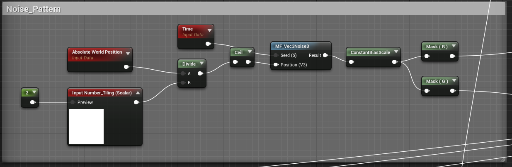
if you preview the results from the Red or Green Channel, you will see similar results, we use the green channel to drive the emissive later, and we will use the red channel to distort the opacity result
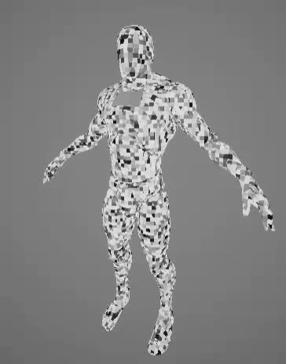
Opacity Mask
To get the final Opacity Mask, we take the Result from A and subtract the result from the Red Channel of the Noise Pattern, and round to the highest value. This result gets plugged into the Opacity Mask Output.
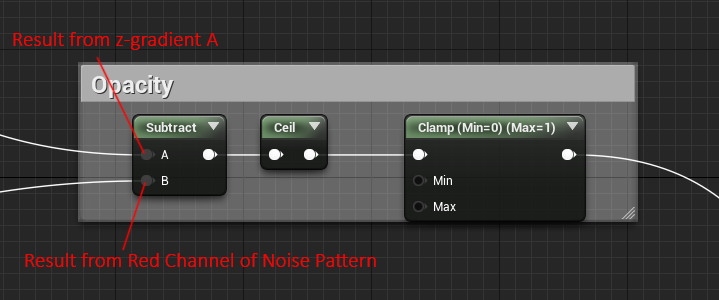
Previweing this result will show the following
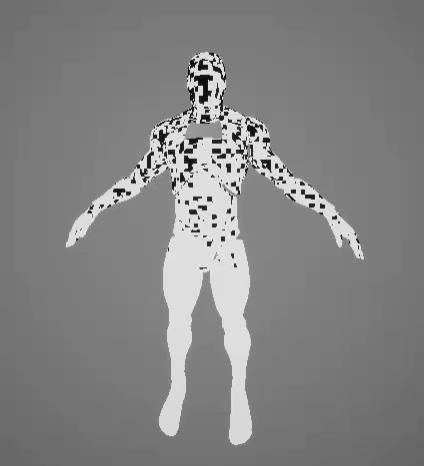
Vertex Deformation
Next we use the result from z-gradient B to displace the meshes Vertices Along the z-Axis to create the effect of being beamed up, we also use some noise to distort the deformation to add some visual interest, once again this noise can be repalced with different patterns to achieve different effects, we use Vector(0,0,1) to control the direction of the displacement. The result from this network goes into the WorldPositionOffset output.
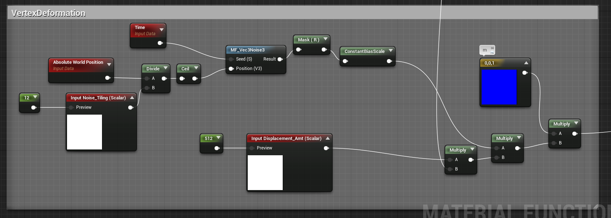
We have two input variabes Noise_Tiling to control the tiling of the noise pattern and Displacement_Amt to control how far along the z-axis the Vertices get Displaced.The result looks like this
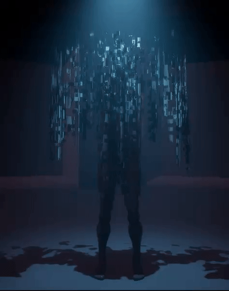
Emissive
In this last section we use the Noise Pattern to add some emissive to the effect to finish it off. We use a seperate scalar Parameter called GlowPatternControl to control the emissive Transition, I did this so that we can have more artistic control over the timings of the effect, we could just as easily have this controlled by the z-gradient or the Transition Scalar Parameter. We also have a another input variable Glow_Color to control the color of the emissive glow.
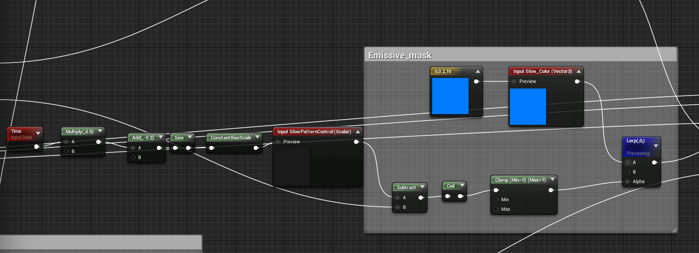
Previweing the result from this network
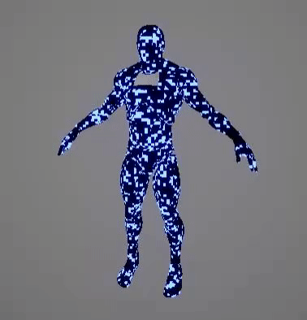
Conclusion
And there you have it, now you should have a material function with the following inputs that you can add to any shader
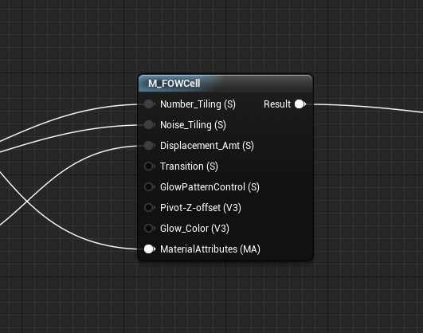
Here’s the full Material Graph for reference
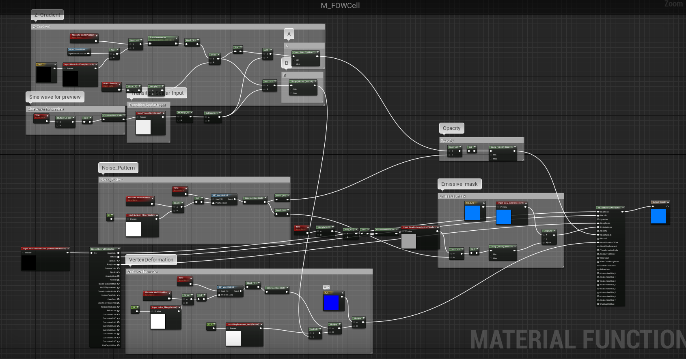
Here are some variations using different patterns.


关于本文
本文作者 Master Gong Sheng, 许可由 CC BY-NC 4.0.